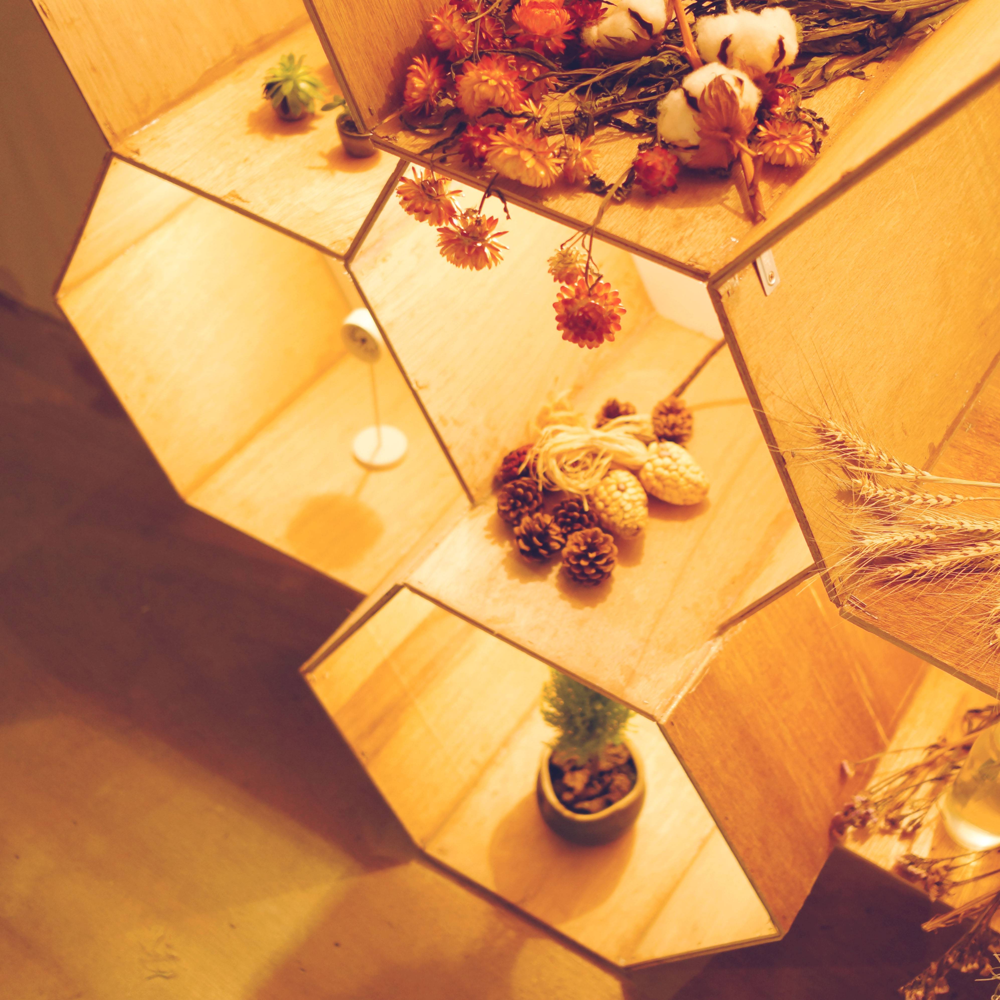
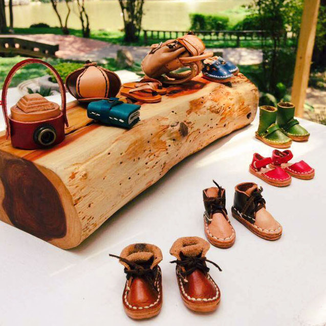
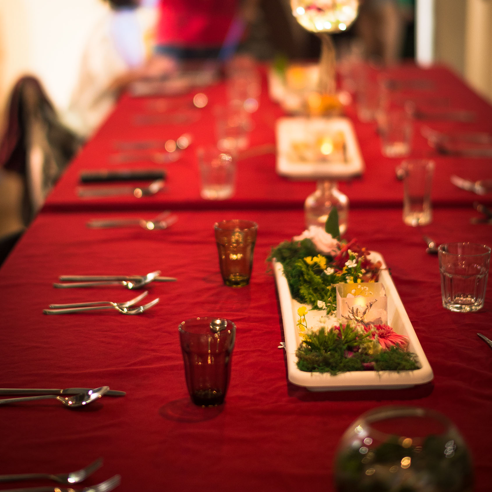
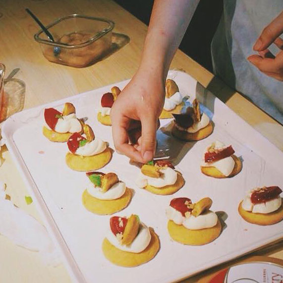

已收到您的匯款回報
感謝您的匯款！您的訂單目前狀態將顯示為「待核對」，等蒔品團隊審核過款項，確認無誤之後，您的訂單狀態即會顯示為「已付款」到時候就請您來現場領貨就可以囉！以下詳列領貨辦法：
物品取貨方式
時間：5/31 10:00 - 17:00 ， 6/1 12:00 - 14:00 ， 6/2 12:00 - 14:00
地點：醉月湖畔蒔品餐廳現場
我們採取統一取貨的模式，匯款完成後，請於時間內至 醉月湖畔的蒔品餐廳現場取貨唷！ 若本人該日無法親自領取，可以請人代領，若尚有困難， 可以私訊蒔品Life Seeding粉絲專頁，我們會盡力幫助您。
領貨其他注意事項：我們現場也會提供包物品的包材，但數量不多，因此請自行攜帶紙袋或報紙，在蒔品餐廳培植品味外，也愛護地球！



